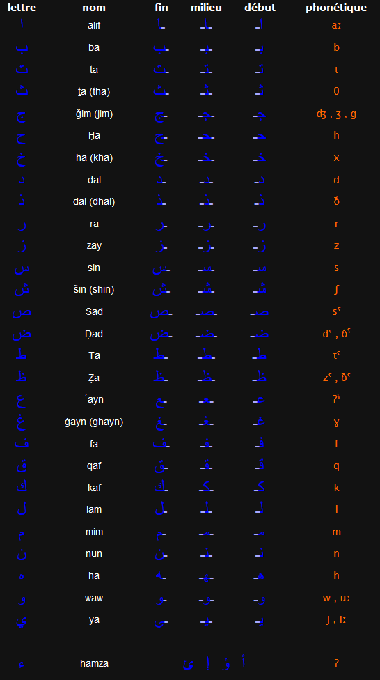

Fiche langue et civilisation Arabe ✏️
Langue
La langue arabe se lit et s'écrit de droite à gauche. Les lettres changent légèrement de forme selon leur position dans le mot = début / fin / milieu Certaines lettres ne sont pas fiables , ce sont les lettres : ا / ذ / د / ر / ز Le caractère et les signes voyelles peuvent être considérés comme des signes-phonèmes.
L’alphabet
28 lettres avec la hamza
Les voyelles
La langue arabe dispose de trois voyelles longues : î (“i” long), û (“ou” long) etâ (“a” long, transcrit par alif). Elle dispose aussi de trois voyelles brèves : i (“i” bref), u (“ou” bref) et a (“a” bref). Les voyelles brèves s'écrivent sur/sous la lettre après laquelle elles se prononcent.
Les voyelles courtes en arabe sont au nombre de 4 :
- La fatha (الْفَتْحَة) qui s’écrit بَ. Cela donne à l’oral le son « è ».
- La kasra (الكَسْرَة) qui s’écrit بِ. Cela donne le son « i » à l’oral.
- La damma (الضَّمَّة) qui s’écrit بُ. A l’oral on la prononce « ou ».
- La soukoun (السُّكُون) qui s’écrit بْ. Cela s’illustre à l’oral par une aspiration de la lettre ornée de la soukoune.
Mots invariables
| Arabe | Francais | Prononciation |
|---|---|---|
| ال | le / la /les | [al] |
| أنا | je | [ana] |
| أنت | tu/toi(m) | [anta] |
| أنت | tu/toi(f) | [anti] |
| هو | il | [huwa] |
| هي | elle | [hiya] |
| أنتم | vous (m) | [antom] |
| نحن | nous | [nahnou] |
| ثانيا | deuxieme | [thaniaan] |
| من | qui | [man] |
| ماذا | qu’est ce que… | [madha] |
| نعم | oui | [naham] |
| لا | non | [la] |
| مع | avec | [mae] |
| و | et | [waw] |
| شكرا | merci | [shoukran] |
| قران | Coran | [quran] |
| هلا | Bienvenue | [ahlan] |
Les signes diacritiques
Ce sont le sukkūn, le wasla, le šadda. Le sukkūn est un signe vocalique, le wasla est un signe syllabique et le šadda est un signe consonantique.
- Le sukkūn, réalisé [ ْ ], note l’absence de /a/, de /i/ et de /ou/. Il peut être dit « voyelle zéro ». Par exemple ﺒْڪٽ báht « enquête, recherche ».
- Le wasla est réalisé [ ۘ ]. Il indique que la consonne qui le suit est la marge droite de la voyelle, centre de la voyelle qui le précède.
- Le šadda se place au-dessus des consonnes redoublées : [ ّ ].
Les chiffres
Les Arabes ont adopté les chiffres d’origine indienne : « 1 » ١ , « 2 »٢ , « 3 »٣, « 4 »٤, «5 » ٥, «6 » ٦, «7 » ٧, « 8 » ٨, « 9 » ٩, « 0 »٠ . Les nombres sont écrits avec les chiffres dans le sens indien, de gauche à droite.